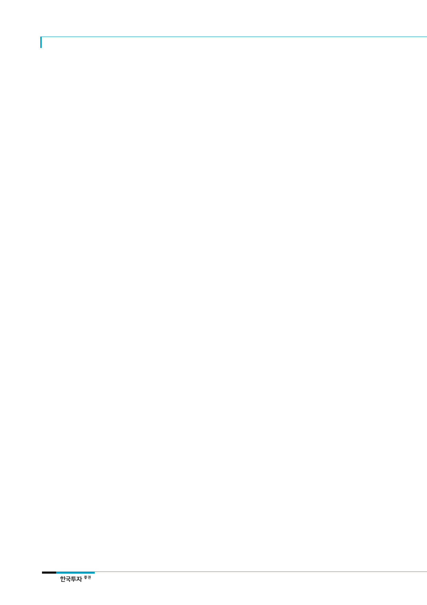

삼성바이오로직스(207940)
리스크를 반영하여 2023년
이후 추가적 증설은
없는 것으로 가정
임상실패나 판매부진에 따른
주가급락 우려
2. 단기적인 리스크는 제한적인 상황
1) 경쟁업체들의 설비증설 우려
CMO사업의 가장 큰 리스크는 경쟁업체들의 공격적 설비증설에 따른 과잉공급이다. 앞서
언급한 CMO시장의 진입장벽을 고려할 때 증설은 신규 업체들보다는 기존의 Top-tier업
체들 위주로 이루어질 것으로 예상한다. 이미 Lonza, Boehringer Ingelheim(이하 BI) 등
의 업체들은 증설을 진행할 계획으로 알려졌다. Lonza의 경우 Sanofi와 합작법인을 설립
하여 약 3천억원의 설비증설 계획을 발표한 바 있으며 BI의 경우에도 2021년을 목표로
현재의 30만리터에서 37.5만리터로 설비증설을 진행하고 있다. 그러나 신규공장설립에는
수년의 시간이 소요되는 만큼 당분간의 과잉공급 우려는 제한적이라는 판단이다. 그러나
향후 CMO시장의 성장이 예상보다 더딜 경우에는 과잉공급의 우려가 존재한다. 우리는 이
러한 우려를 반영하여 2023년 이후 동사의 추가적인 설비증설은 없는 것으로 가정하였다.
2) 바이오시밀러 파이프라인의 개발실패
해외 경쟁업체 Coherus Biosciences의 경우에서도 알 수 있듯이 바이오시밀러 파이프라
인의 임상실패는 주가급락으로 이어진다. 현재까지 바이오에피스의 파이프라인들은 개발
에 있어 순항중이지만 향후 임상이 실패하거나 판매가 부진할 경우 실적 및 주가에 있어
리스크로 작용할 수 있다. 관련 사안들에 대한 주기적인 점검이 필요하다는 판단이다.
기업개요 및 용어해설
기업개요
2011년 4월 설립되어 2016년 11월 코스피에 상장한 삼성그룹 산하의 동물세포배양타입
의 바이오의약품 CMO(Contract Manufacturing Organization, 의약품 위탁생산 사업)업
체이다. 2016년 기준 매출의 100%가 CMO사업에서 발생했다. 주요주주는 삼성물산
(43.4%)과 삼성전자(31.5%)이다. 동사의 주요 고객사는 글로벌 제약업체들인 Bristol-
Myers Squibb(BMS), Roche 등이며 Merck와 Biogen을 협력 파트너로 보유하고 있다.
용어해설
바이오의약품: 생물학적제제, 생물체에서 유래된 물질이나 생물체를 이용해 생성시킨
물질을 함유한 의약품으로서 물리적, 화학적 시험만으로는 그 역가와 안전성을 평가할
수 없는 백신이나 혈장분획제제 및 항독소 등
바이오시밀러: 이미 승인을 획득한 오리지널 의약품과 비교하여 약효, 안전성, 순도,
효능뿐만 아니라 여러 물리화학적, 구조적 특성 측면에서 매우 높은 유사성을 보유하고
있는 의약품
합성의약품: 유기합성 기술을 기반으로 한 의약품
CMO(Contract Manufacturing Organization): 자체 생산역량이 부족하거나, 의약품
R&D 및 마케팅에 사업역량을 집중하기 위해 생산을 전략적으로 아웃소싱하는 글로벌
제약사들을 고객으로 하는 바이오의약품 위탁생산 사업
FDA(Food and Drug Administration): 식품이나 의약품, 화장품, 동물약, 장난감 등
소비자가 평소 생활에서 접하는 제품에 대해 그 허가나 위반품 단속으로 전문적으로
담당하는 미국의 국가행정조직
EMA(European Medicines Agency): EU의 의약품과 관련된 규제를 담당하는 조직
26